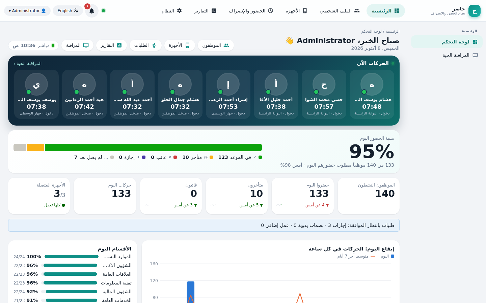
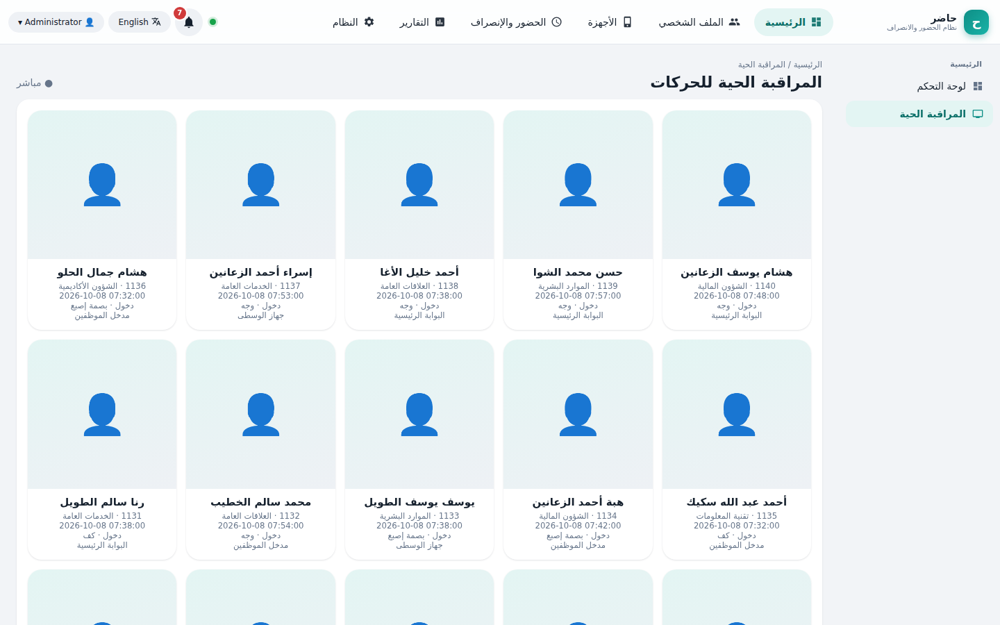
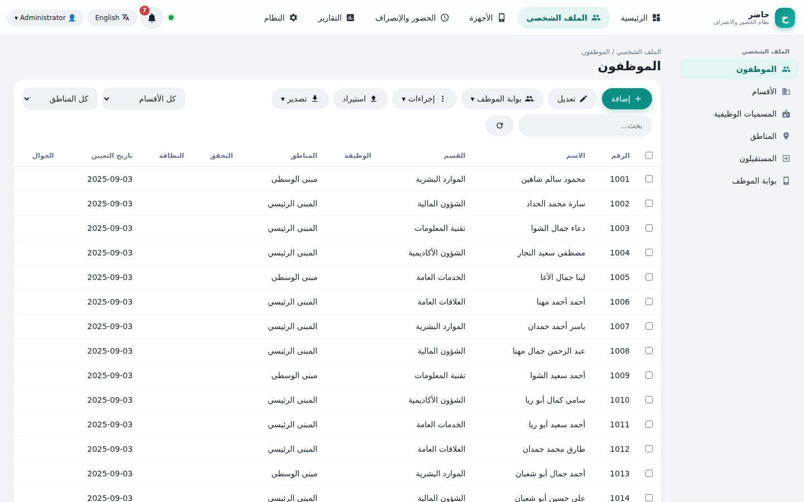
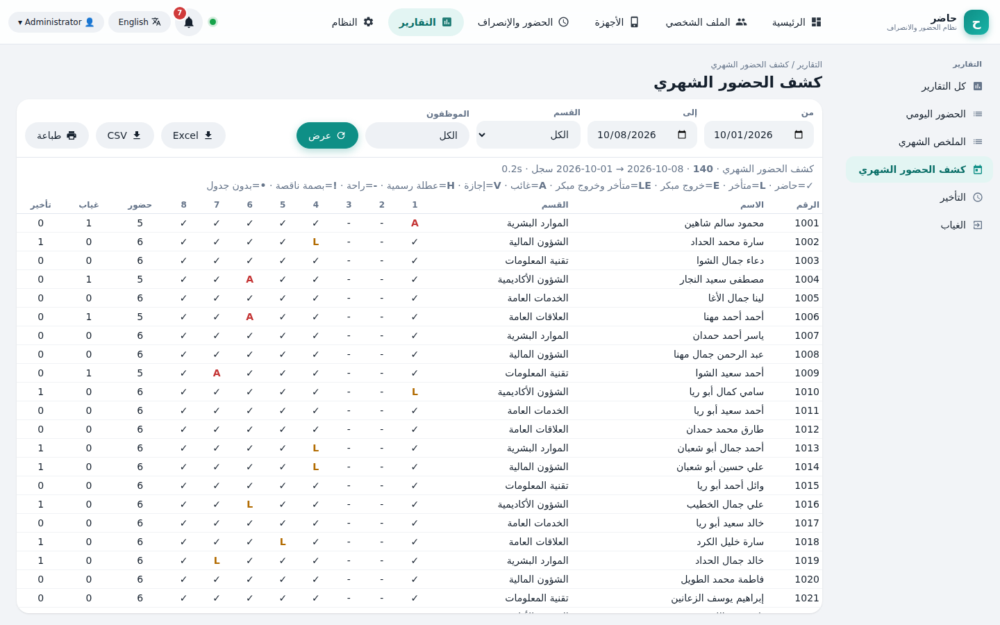
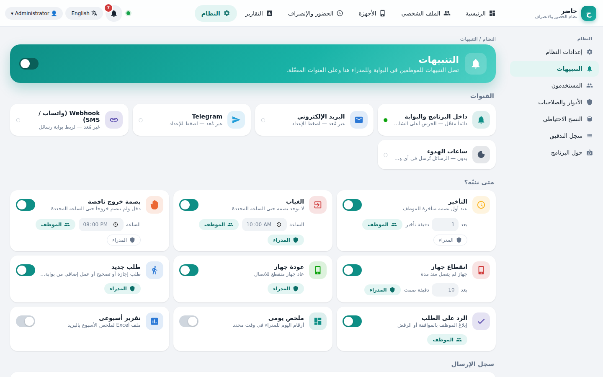
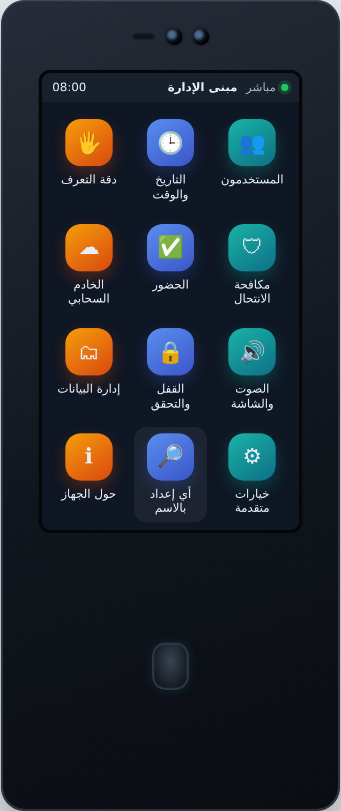
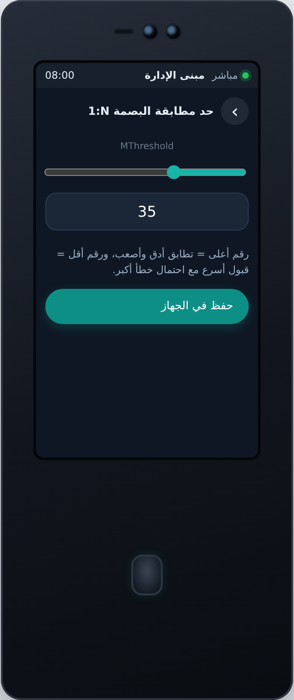
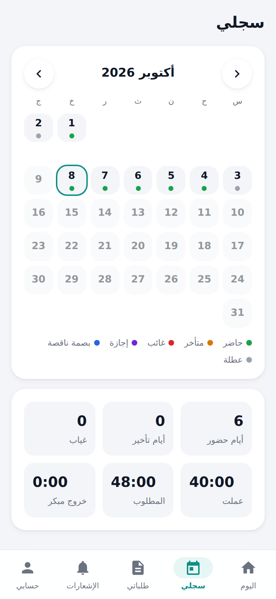
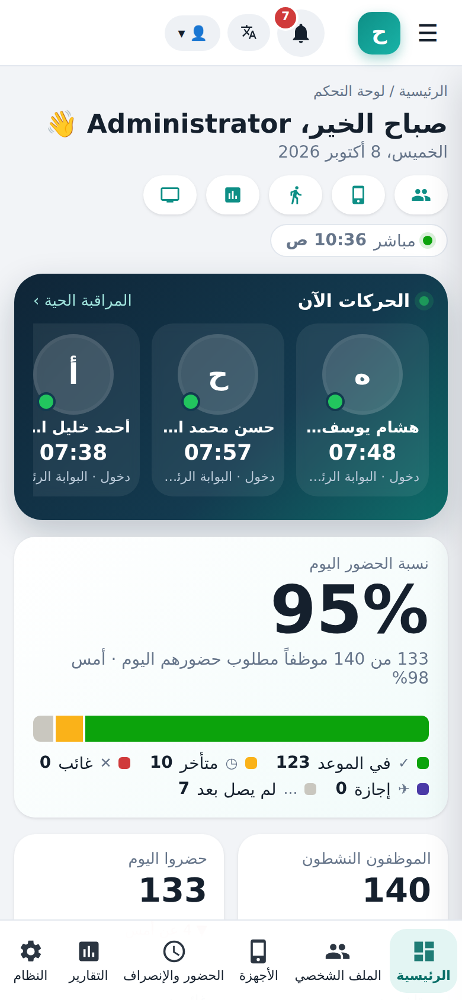

حاضر يتحدث مع أجهزة البصمة والوجه والكف بنفسه: يكتشفها وحده، يقرأ كل حركة لحظة حدوثها، ويعطي كل موظف تطبيقاً على جواله — وكل بياناتك تبقى على حاسوبك.
من لحظة وضع الموظف إصبعه على الجهاز حتى تقرير نهاية الشهر — بدون جداول يدوية ولا انتظار.
شريط «الحركات الآن» بصور الموظفين أعلى الصفحة، ونسبة الحضور، والمتأخرون والغائبون، وإيقاع اليوم، وحالة كل جهاز — تتحدث تلقائياً لحظة وصول البصمة.

يرى الموظف دوامه اليوم وسجلّه الشهري وأرصدة إجازاته، ويرسل طلب إجازة أو تصحيح بصمة أو عمل إضافي من جواله. تُثبَّت كتطبيق.
كل جهاز يتصل بالحاسوب يُضاف تلقائياً، ويُبحث عن الباقي في الشبكة. يُقرأ منه المستخدمون والبصمات والوجوه والكف والحركات.
واجهة مرسومة بمقاس الجهاز نفسه: دقة التعرف، مكافحة الانتحال، الساعة، الشبكة، الخادم، الصوت والشاشة — تُقرأ وتُكتب مباشرة.
التأخير، الغياب، بصمة الخروج الناقصة، انقطاع جهاز، طلب جديد — داخل البرنامج وبالبريد وتيليجرام، مع ساعات هدوء وتقرير أسبوعي.
أوقات دوام وورديات دورية وجداول للأقسام والأفراد، ودوام ليلي ومرن، وعطل رسمية، وإجازات وعمل إضافي وبصمات يدوية مع الاعتماد.
أول وآخر بصمة، الحضور اليومي، التأخير، الغياب، الإضافي، الملخص والكشف الشهري، الأقسام… تُصدَّر إلى Excel وCSV وتُطبع، وتفتح فوراً حتى مع عشرات آلاف السجلات.
بصمة سُجِّلت على جهاز تصل لكل أجهزة منطقتها، والموظف الجديد يُرسَل لأجهزته، والمستقيل يُحذف منها — تلقائياً.
إن كان برنامج آخر يستقبل الأجهزة الآن، يعمل حاضر في وضع «القراءة فقط» دون أن يغيّر شيئاً، وينتقل للوضع الكامل حين تقرر.
لا مكتبات ولا برامج وسيطة ولا إعداد معقد.
انقر start.bat مرتين: يثبّت كل ما يلزمه في المرة الأولى ويفتح المتصفح. ادخل بـ admin وغيّر كلمة المرور.
في إعداد «الخادم السحابي» على الجهاز: عنوان هذا الحاسوب والمنفذ 90. أو اترك حاضر يجدها في الشبكة عبر 4370.
تظهر الأجهزة والموظفون والبصمات والحركات خلال دقيقة. افتح البوابة للموظفين من صفحة الموظفين وشارك الرابط /me.
بطاقات واضحة، أزرار كبيرة، ونوافذ تنزلق من الأسفل. ويعمل من المتصفح على أي جهاز في شبكتك، حتى الجوال.








مقارنة بالطريقة المعتادة: برنامج الجهاز التقليدي مع كشوف Excel.
| الطريقة المعتادة | حاضر | |
|---|---|---|
| ظهور البصمة في البرنامج | عند السحب اليدوي أو كل فترة | لحظياً |
| إضافة الأجهزة | يدوياً جهازاً جهازاً | تلقائياً |
| واجهة عربية كاملة مع ترجمة أسماء الموظفين للإنجليزية | جزئياً | ✓ |
| تطبيق جوال للموظف: سجله وطلباته | — | ✓ |
| تنبيهات تأخير وغياب وانقطاع أجهزة (بريد وتيليجرام) | — | ✓ |
| إعدادات الجهاز عن بُعد: دقة التعرف، مكافحة الانتحال، الساعة، الخادم | من أمام الجهاز | من مكتبك |
| العمل جنباً إلى جنب مع برنامج آخر دون تعارض | — | وضع القراءة فقط |
| نسخ احتياطي يومي تلقائي | يدوياً | ✓ |
C:\ProgramData\Hader.أجهزة البصمة والوجه والكف التي ترسل بياناتها إلى خادم عبر بروتوكول الإرسال (Push / Cloud Server)، أو التي تقبل الاتصال المباشر على المنفذ 4370. يقرأ حاضر طراز الجهاز ويعرض واجهته بأبعاده.
لا. يعمل حاضر في وضع «القراءة فقط» ويقرأ الأجهزة مباشرة كل دقيقة دون أن يكتب عليها. حين تريد الانتقال الكامل، حرّر المنفذ 90 فيأخذه حاضر خلال ثوانٍ.
فقط في التشغيل الأول لتثبيت المكتبات، وإن أردت إرسال التنبيهات بالبريد أو تيليجرام. العمل اليومي كله داخل شبكتك.
من صفحة «بوابة الموظف» تُصدر كلمات المرور وتُطبع بطاقات فيها رمز QR، فيمسحه الموظف بكاميرا جواله ويضيف البوابة للشاشة الرئيسية. تعمل داخل شبكة المؤسسة، ومن البيت عبر رابط آمن (HTTPS) يُفتح بخطوة واحدة — والمنفذ المفتوح للإنترنت يخدم البوابة فقط، فلا تظهر صفحات الإدارة ولا الأجهزة خارج المؤسسة.
نعم، بزر واحد: الواجهة والتقارير وأسماء الأقسام والأجهزة، وأسماء الموظفين تُكتب بالحروف اللاتينية تلقائياً أو بالاسم الإنجليزي إن أدخلته.
شغّل reset_password.bat على الحاسوب الذي يعمل عليه البرنامج، فتعود إلى admin / admin ويُطلب تغييرها عند الدخول.
نثبّته لكم على حاسوب في شبكتكم، ونربط الأجهزة، ونفتح بوابة الموظفين — مع نسخة تجريبية بشركة نموذجية لتراه قبل أن تبدأ.